Scene 1 Camera 1
Scene 1 Camera 2
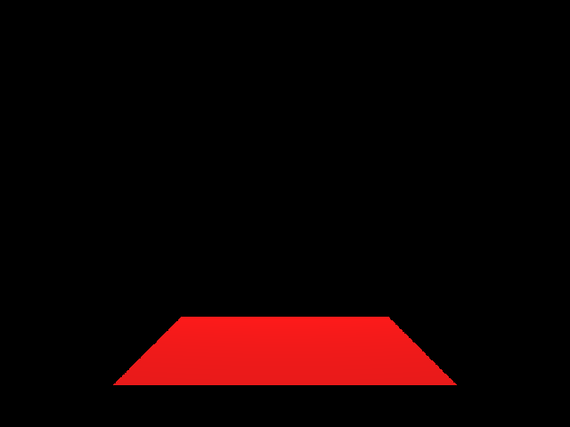
Scene 1 Camera 3Scene 1 Camera 4
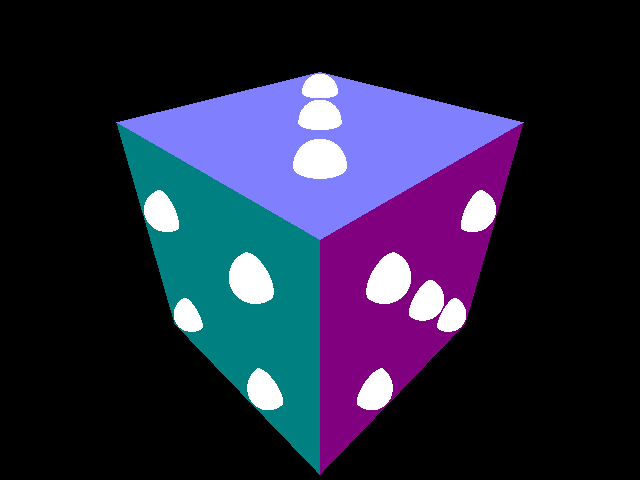
Scene 2 Camera 1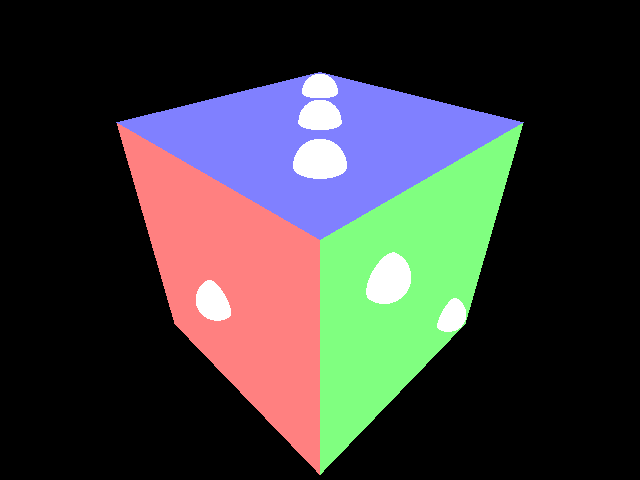
Scene 2 Camera 2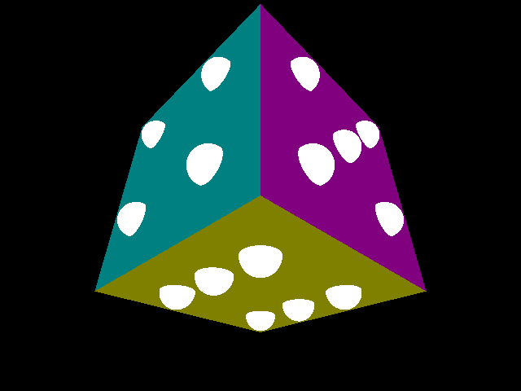
Scene 2 Camera 3 Scene 3
Scene 3Raytracer built in C++. Blinn-Phong shading, mirror reflections, BVH acceleration, soft shadows, and antialiasing.

Scene 1 Camera 3
Scene 2 Camera 1
Scene 2 Camera 2
Scene 2 Camera 3Scene 3 Scene 4 ambient
Scene 4 ambient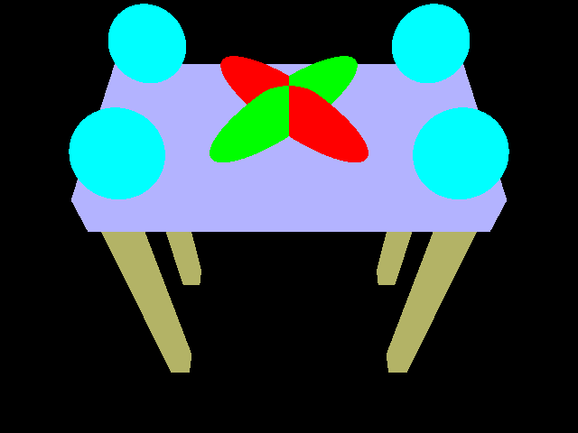
Scene 4 emission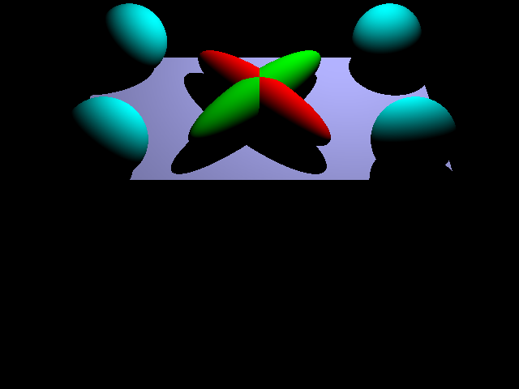
Scene 4 diffuse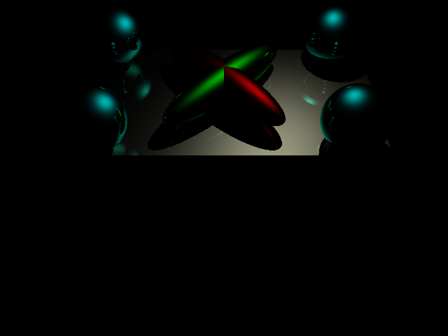
Scene 4 specular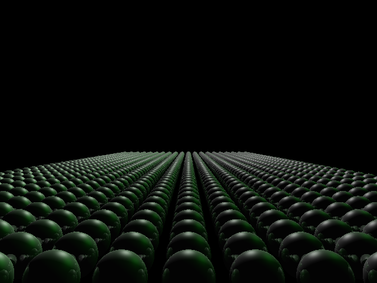
Scene 5 sphere field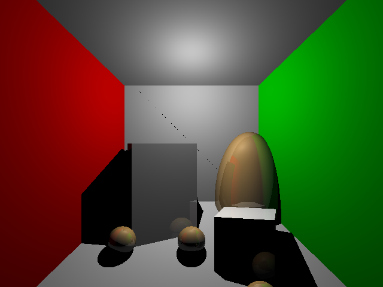
Scene 6 Cornell boxPrimitives are organized into a bounding volume hierarchy using longest-axis median splitting, with up to 4 primitives per leaf. Traversal skips subtrees whose bounding box is missed by the ray or is farther than the current closest hit.
Scene 7 (dragon, 100,000 triangles) rendered in ~1 second on a MacBook Pro M4.
16 randomly sampled rays per pixel are averaged together, removing jagged edges on geometry and silhouette boundaries.
Scene 4 Before: no antialiasing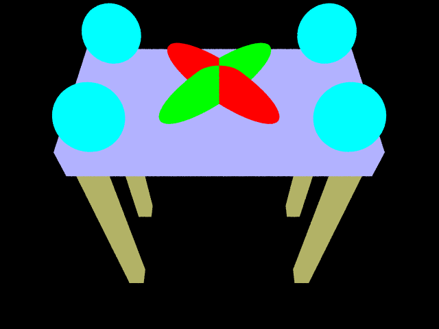
Scene 4 After: antialiasingScene 4 Before: no antialiasing (zoomed)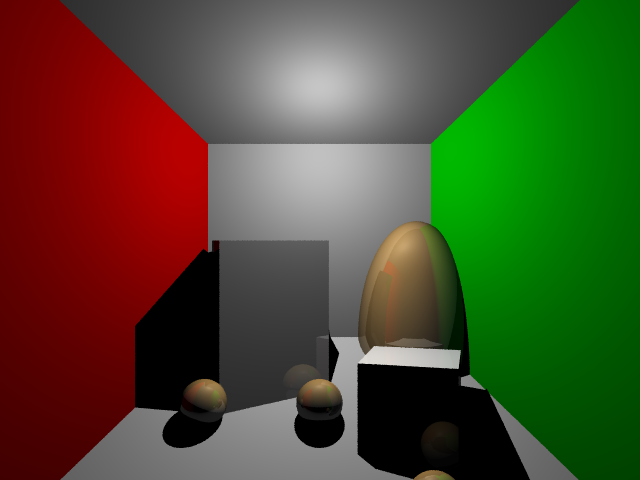
Scene 6 After: antialiasingEach point light is approximated as a disk area light. 16 stratified samples are distributed across the disk using a jittered grid mapped to polar coordinates, and the light contribution is scaled by the fraction of unoccluded samples.
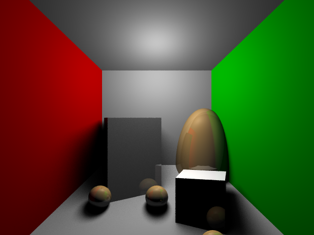
After: soft shadows